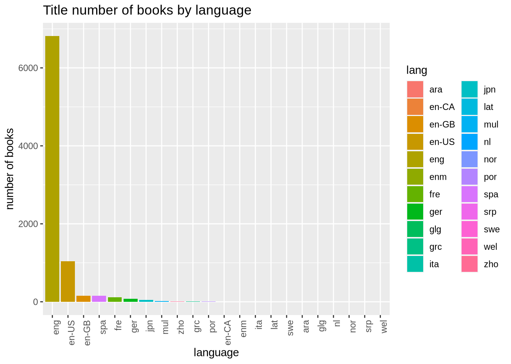

Book review statistics
Samal Abdikerimova, Ravi Donepudi, Carlos Salinas, and Xiran Yu
Book review statistics
Ideas
- Look at relationship between reviews and pages.
- Filter by language.
- Relationship between popularity and gender.
- Language and popularity.
- Genre popularity through the years.
- Publisher relationship with rating.
- Publisher and gender relationship.
Note that there is an Goodreads API and that somebody has written an R interface to it, however we do not have enough time to explore it and get it to do as we want. What we will do instead is use the data set found on Kaggle heretogether with the Goodreads API to answer some of the questions above.
First we import the data and take a good look.
books <- read_csv("data/books.csv") %>%
rename(rating = average_rating,
total_ratings = ratings_count,
lang = language_code,
pages = num_pages)
books## # A tibble: 8,472 x 12
## bookID title authors rating isbn isbn13 lang pages total_ratings
## <dbl> <chr> <chr> <dbl> <chr> <chr> <chr> <dbl> <dbl>
## 1 1 "Har… J.K. R… 4.57 0439… 97804… eng 652 2095690
## 2 2 "Har… J.K. R… 4.49 0439… 97804… eng 870 2153167
## 3 4 "Har… J.K. R… 4.42 0439… 97804… eng 352 6333
## 4 5 "Har… J.K. R… 4.56 0439… 97804… eng 435 2339585
## 5 8 "Har… J.K. R… 4.78 0439… 97804… eng 2690 41428
## 6 9 "Una… W. Fre… 3.74 0976… 97809… en-US 152 19
## 7 10 "Har… J.K. R… 4.73 0439… 97804… eng 3342 28242
## 8 12 "The… Dougla… 4.38 0517… 97805… eng 815 3628
## 9 13 "The… Dougla… 4.38 0345… 97803… eng 815 249558
## 10 14 "The… Dougla… 4.22 1400… 97814… eng 215 4930
## # … with 8,462 more rows, and 3 more variables: text_reviews_count <dbl>,
## # publication_date <chr>, publisher <chr>Let’s get more of an idea of what we are working with. Since we speak English we’d like to focus solely on English language books. But first let’s see how many of them we have
books %>%
subset(is.na(as.numeric(lang))) %>%
subset(!is.na(lang)) %>%
group_by(lang) %>%
tally() %>%
arrange(desc(n)) %>%
ggplot(aes(x = factor(lang, levels = lang), y = n, fill = lang)) +
geom_bar(stat = "identity") +
labs(title = "Title number of books by language",
x = "language",
y = "number of books") +
theme(axis.text.x = element_text(angle=90, hjust=1))## Warning in eval(e, x, parent.frame()): NAs introducidos por coerción
Nice, so the overwhelming majority of the data is in eng. However, it looks like US and Great Britain version of books fall under a different language tag (and if we search hard Canadian too). For our purposes "en-CA", ``"en-GB", and en-US are the same so let us clean up the data a little
books$lang <- books %>%
pull(lang) %>%
str_replace_all("en*(g|-GB|-US|-CA)", "eng")Another way to deal with this problem is simply to ignore these variants by filtering them out of the data set. Now, since the overwhelming majority of the books in this data set are in English, we will focus our attention on "eng".
eng_books <- books %>% filter(lang == "eng") %>% filter(rating >= 3)One thing we might one to look at first is the distribution of ratings for English books. We do this as follows
eng_books %>%
group_by(rating) %>%
summarize(total_books = n()) %>%
ungroup() %>%
ggplot(aes(x = rating)) +
geom_bar(aes(y = total_books/1.000001, fill = rating),
stat = "identity") +
labs(title = "Total number of books per rating",
x = "average rating",
y = "number of books")
OK, to make better sense of this data let’s take a look at how many people are reading these books
and who are the most prolific writers
eng_books %>%
group_by(authors) %>%
summarize(count = n()) %>%
arrange(desc(count)) %>%
ungroup() %>%
slice(1:10)## # A tibble: 10 x 2
## authors count
## <chr> <int>
## 1 Stephen King 31
## 2 Sandra Brown 27
## 3 Dick Francis 26
## 4 James Patterson 22
## 5 Margaret Weis/Tracy Hickman 21
## 6 Orson Scott Card 20
## 7 Terry Pratchett 20
## 8 Gordon Korman 19
## 9 Piers Anthony 18
## 10 Alan Dean Foster 17Stephen King—that was sort of expected—and who are the top rated authors
eng_books %>%
group_by(authors) %>%
summarize(average_rating = sum(rating)/n()) %>%
arrange(desc(average_rating)) %>%
ungroup() %>%
slice(1:10)## # A tibble: 10 x 2
## authors average_rating
## <chr> <dbl>
## 1 Chris Green/Chris Wright/Paul Douglas Gardner 5
## 2 James E. Campbell 5
## 3 Julie Sylvester/David Sylvester 5
## 4 Keith Donohue 5
## 5 Laura Driscoll/Alisa Klayman-Grodsky/Eric Weiner 5
## 6 Middlesex Borough Heritage Committee 5
## 7 Ross Garnaut 5
## 8 Sheri Rose Shepherd 5
## 9 Todd Davis/Marc Frey 5
## 10 William C. Dowling 5who are these people? So highly rated authors are not necessarily notable ones, perhaps there is a better way to measure top authors.
eng_books %>%
(function(...) {
tmp <- tibble(...)
tmp$authors <- tmp$authors %>%
str_replace_all("Margaret Weis/Tracy Hickman",
"Weis/Hickman")
tmp}) %>%
group_by(authors) %>%
summarize(book_count = n(),
sum_rating = sum(rating)) %>%
arrange(desc(sum_rating)) %>%
slice(1:10) %>%
ggplot(aes(factor(authors, levels = authors), sum_rating, fill = authors)) +
geom_col() +
coord_flip() +
labs(title = "Author rankings",
y = "author",
x = "sum rating") +
scale_fill_brewer(palette="Spectral")